← 返回阅读库 · 原论文目录
论文讲解阅读文档 · 表征学习 · v161
Equivariant Contrastive Learning[2111.00899]
视频时长 00:10:01；讲解文字 4,725 字符；提取讲解画面 23 张。按视频原顺序阅读，每段文字保留时间戳。
文字来自整段视频的自动语音转写，按自然停顿分段，并与 PPT / 论文页面 / 演示画面对齐。未将讲解压缩为摘要；术语、数字和口述公式请结合画面及原论文核对。 阅读稿已校正规范部分明确术语误识别；原始逐字稿和每处修改记录另行保留。
讲解画面为源视频截图（640×360），不是可编辑 PPT 文件。全片按每秒 2 帧扫描内容变化，逐步展开页保留；连续动画保留代表画面。清晰度受源视频限制。
下载完整资料包 · 含离线 HTML、PDF、Word、全部 PPT 画面和字幕。
原论文与材料
Equivariant Contrastive Learning · 下载完整 PDF（21 页）
按时间阅读
00:00:00–00:00:11 · 画面 001
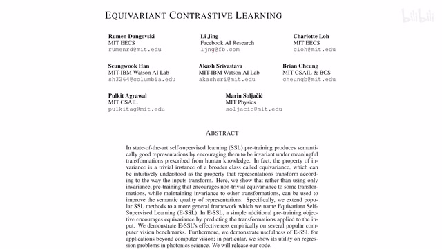
00:00:00–00:00:11 · 画面 001大家好啊今天我们来快速说一篇论文Equivariant Contrastive Learning一种有 variant 的这个 contrastive learning那我们来具体来看这里讲了一个什么故事吧
00:00:11–00:00:51 · 画面 002
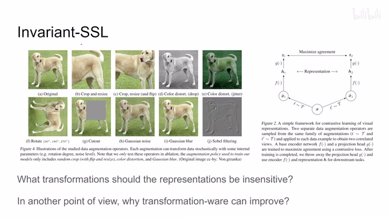
00:00:11–00:00:51 · 画面 002首先呢我们来快速回顾一下之前我们介绍的这些self-supervised learning 这些方法比如说像 SimCLR, MOCO, SimSiam这种各种各种方法它们呢你从一个很高的角度去看呢都可以归为invariant self-supervised learning invariant SSL为什么呢因为它们都应用到了一个很重要的假设就是我同一张图经过不同的 augmentation经过不同的 transformation那变化出来的图呢得到的这个 representation 呢
它们表达的应该是同一个意思那这个同一个意思呢在这里呢就是这个 invariant比如说你看这个狗原始的头像是这样你经过各种 transformation对吧它还是狗的
00:00:51–00:01:00 · 画面 003
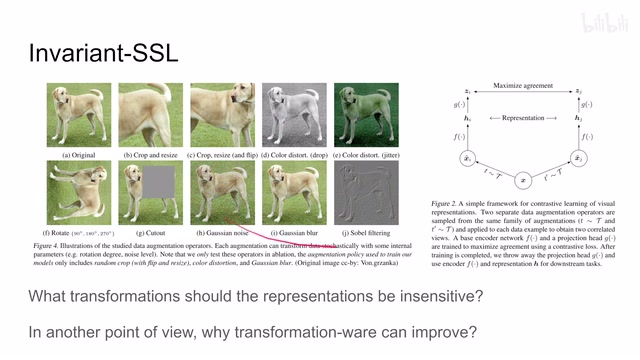
00:00:51–00:01:00 · 画面 003朋友看我单身 10 年了问我你今年还是一个人吗您瞧这问题问的今年我还能变成狗吗对吧哇
00:01:00–00:02:16 · 画面 004
00:01:00–00:02:16 · 画面 004所以这个所以所有的这些方法它们都认为说这个像经过各种 transformation 之后这些图像的 representation应该跟原始的这个输入的图像它们是等效的看到这里呢一针是这个一种强化另一针是另一种强化对吧它们的 representation 应该是一样的这个呢是我们之前介绍的所有的这个 invariant SSL它们的这个基础的一个共识但是在本文中呢作者有了一些新的观察那作者想为什么我们说这里呢就可以把这种图像算作是同一种类型为什么它们就算是 invariant如果说我们的模型
把一些增强增强过的图像视为不同的类别会怎么样那举个简单的例子来说假如说你要根据图像来分辨左手和右手那这个时候呢你如果对图像做的 flip对吧水平的这种翻转那它的这个意义就很明显了这个事情在 reinforcement learning 里面特别常见啊这就是另外的话题了所以说我们再回过头来看之前我们介绍的一些文章，他们说在我们 representation learning 的时候要把我们的 transformation，就是 data augmentation 这些东西，他们这些信息也包括在我们 contrastive learning 学习的过程中，为什么这些方法它有的时候能够 work，它能够改善性能，这篇论文就提出了一个很好的根据。那么我们继续来看作者的一些观察，这里作者引入了 sensitivity 和 insensitivity 的概念
00:02:16–00:02:17 · 画面 005
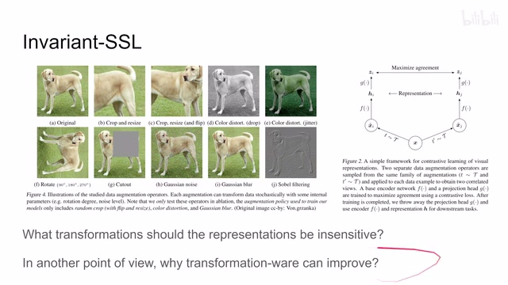
00:02:16–00:02:17 · 画面 00500:02:17–00:02:24 · 画面 006
00:02:17–00:02:24 · 画面 00600:02:24–00:03:43 · 画面 007
00:02:24–00:03:43 · 画面 007那本质上来说呢，就是我一张图像经过一个 transformation，这个 transformation 它可能会随机出不同的参数来，这个随机不同参数的 transformation 然后得出来很多张图像。如果我们认为得出来这很多张图像都是同一个图像，认为它们的 representation 都应该是一样的，那么呢，我们这个方法就是对这个 transformation 不敏感的。那相反的，如果我们认为经过不同参数的同一个 transformation 得出来的不同的这个图像，它们的 representation 应该不一样
那这时候呢，就说我们的方法是对这个 transformation sensitive 的。那有了这个简单小定义之后呢，我们就来看作者的一系列观察。这个呢，是用这个 SimCLR 他的这个 data augmentation 呢 base line 只选了这个 random resized cropping，就是说只是随机切出了一个图像来作为我们的 data augmentation，然后呢你就正常学嘛，对吧？学出来一个性能，这个叫 base line。那下面呢作者就开始往里面加东西了。那随后呢，在这 random cropping 的基础上呢，作者呢开始
组合这个 random cropping 和第二个这个 data augmentation 或者叫 transformation。这里作者用 transformation 比较多，比如说这一组就是 random cropping 加上 horizontal flips，那这组就是 random cropping 加上 grayscale，以此类推。那么加上第二个 augmentation 之后做什么事呢？我们可以看到这有两种蓝色的呢，表示 insensitive，就是作者认为说第二种这个 augmentation，第二种这个 transformation
00:03:43–00:03:44 · 画面 008
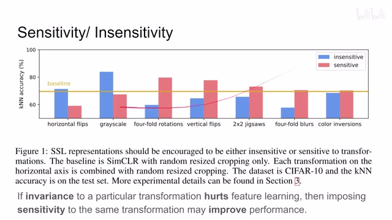
00:03:43–00:03:44 · 画面 00800:03:44–00:03:58 · 画面 009
00:03:44–00:03:58 · 画面 009它出来的图不管它什么参数我们应该视为它的 representation都应该是相同的sensitive 相当于
00:03:58–00:03:59 · 画面 010
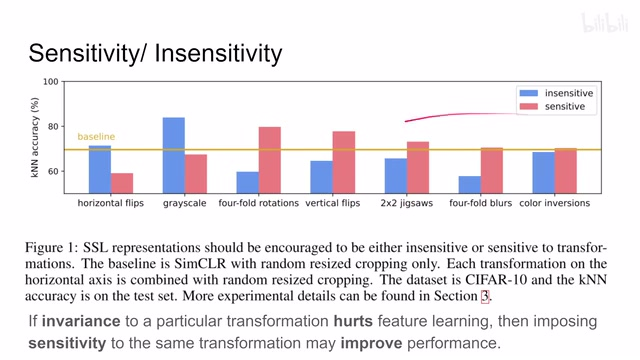
00:03:58–00:03:59 · 画面 010我们认为不同参数的 transformation
00:03:59–00:04:59 · 画面 011
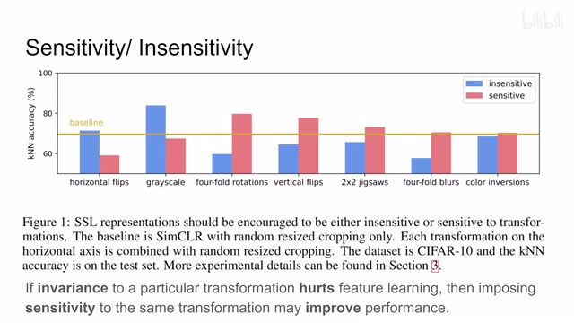
00:03:59–00:04:59 · 画面 011出来的图的 representation它们应该是不一样的这个是红色的 sensitive测试了这些 transformation 下来发现了一个非常有意思的现象假如说我们的 invariance insensitive它影响了我们的 feature learning 的性能比如说这里相对于 baseline这里下降了好多那么相应的呢我们反过来我们让我们的这个 feature learning对这个 transformation 敏感一下我们来特地来区分这个 transformation 做了什么
结果呢就可以提高我们这个 feature learning 的性能可以看到这里很有意思的一个趋势要么就是蓝的比这个 base line 低红的比 base line 高要么呢就是红的比 base line 低蓝的比 base line 高这个一正一负所以呢从这个现象里面我们可以得到一个很有趣的一个规律一个 transformation我们不对它做区分它影响了性能我们就对它做区分它就能提高性能这个大山不向穆罕默德走来穆罕默德变向大山走去那既然这样呢，我们就开始调吧，对吧？我们是比如说这个 flips 啊，他以明概念不明概念 rescale 对吧？rotation 这些东西，我们就开始调呗，对吧？那怎么调呢？作者说我们不同的这个下游任务啊，他的这个最优的这个组合是不一样的
00:04:59–00:06:05 · 画面 012
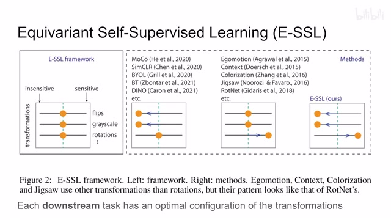
00:04:59–00:06:05 · 画面 012这个倒不意外，我们的世界本来就是一个复杂的世界，没有那么好的事情，有这么一个最优的东西什么都解决了，没有这么好的事情。比如说这里，作者举的例子，这些方法他们对 Flips, Grayscale 都不那么敏感，Rotation 就含混不清，没有特别的去处理的，像这边的这些方法主要针对 Rotations像这些东西含混不清的这些东西，作者认为是还不好的。我们想要发挥这些 transformation 的性能，就像我们之前所说的，要么你给它调到 insensitive 就不敏感，大家就 invariant，提供一个很强的约束，要么就是把它拨到 sensitive 就是我们去分辨这个 transformation 带给我们什么样的结果。这两种操作实际上都是在充分的发挥这个 transformation 它的最大的效用。这个就是作者的核心的思想
那么在本文中做着怎么样这个 transformation 啊这个 rotations 比如说让我们的 encoder 对他变得敏感呢那我们来看本文的实现啊本文的实现其实非常简单啊就是我们的在原来的 loss 的这个 invariance 这个 loss 的基础上看左边这个增加增加这个 equivariance loss 啊就是这里啊你看到这个小鸟啊小鸟转转转啊转完之后呢我们接到一个这个 feature 然后提到这个 predictor 里面
00:06:05–00:06:06 · 画面 013
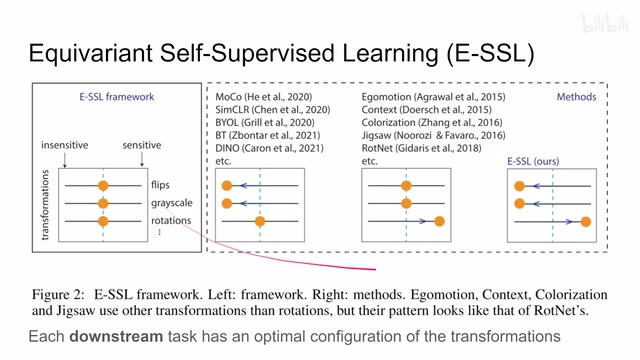
00:06:05–00:06:06 · 画面 01300:06:06–00:06:12 · 画面 014
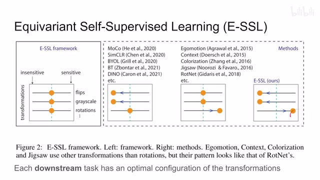
00:06:06–00:06:12 · 画面 01400:06:12–00:06:19 · 画面 015
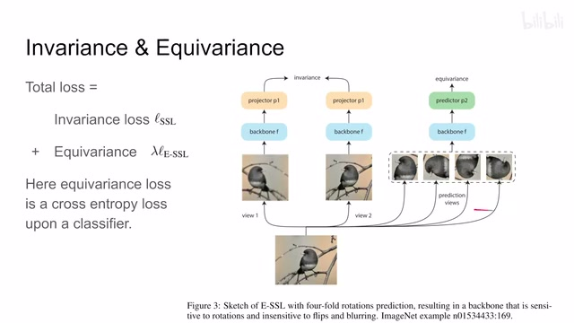
00:06:12–00:06:19 · 画面 01500:06:19–00:06:20 · 画面 016
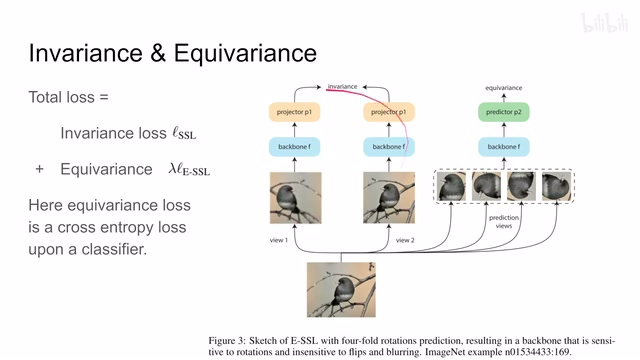
00:06:19–00:06:20 · 画面 01600:06:20–00:07:11 · 画面 017
00:06:20–00:07:11 · 画面 017Predictor 里面做一个 Equivariance 具体来说左边你可以换任何你喜欢的 SSL 的 Backbone 对吧右边这里 Predictor 它就是一个两层的 MLP 这里作者给的任务是 Classification 它希望我们的模型就是 Predictor P2 它能够分辨出我这个小鸟转转转到底是转了多少度你看这里是有 4 个类别 0 度 90180270 对不对他希望我们这个 predictor 告诉我们这是转了多少度的这个图像那这样子呢把这两个 loss 结合起来就是本文的这个 loss 很简单的这个设计但是通过这个设计你发现他会要求我们的 encoder 对我们输入的图像呢对这个旋转的信息敏感一些那么快速来看作者伪代码啊一个图像进来对吧首先是给 ssl 做的大图就正常的做 ssl 就可以了然后呢是给我们的这个 classification
00:07:11–00:07:56 · 画面 018
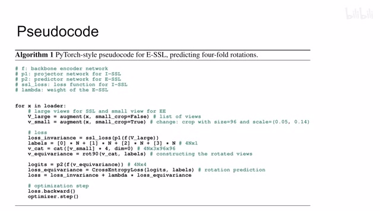
00:07:11–00:07:56 · 画面 018就是后面多了一个 equivariance 做了一个小图那么 SSL 的这个东西呢你就正常算对吧那至于这个旋转呢首先四种 label 对吧旋转了四个方向把我们这个小图复制四遍然后按照相应的这个 label 给它转就好了嘛对吧然后呢算这个 cross entropy 这个 loss 实现起来呢也是非常简单最后把两个 loss 一加就可以了那么通过这样的设计呢作者希望我们的 encoder 去学习 transformation 去学习这个不同的旋转带来的这个影响那么来看一下作者汇报一些结果吧一个他们主要是在这个 CIFAR-10 上面做的这个 ablation 啊还有之前的各种观察啊啊用了这个 SimCLR 和这个 SimSiam 啊可以看到呢首先加上全套了本文这个方法之后呢性能的提升对吧那么重点来看什么样的提升呢
00:07:56–00:09:08 · 画面 019
00:07:56–00:09:08 · 画面 019那重点来看什么玩意提升了呢，比如说换成 single random rotation，就是，就是我不转出四个图像来，我只随机转一个，那性能呢是不行的，来都来了对吧，做个全套的啊，这个 linear enhancing predictor，就是这个 P2 的这个 classifier，两层变成一层啊，这个性能的影响，最后呢是这个 augmentation enhanced view，也就是我这个用来旋转这个图像，它呢也需要变化 augmentation那下面这个呢也很有意思就是说我一个 feature 出来那么在最后的时候我把这个 feature 分成两部分一部分说你认为这两个图是一样的就是去做 invariance 另一部分呢你认为说这两个图是不一样的做 equivariance 那所有人发现呢性能并不怎么样那说明这个事呢还是要分开来做那包括下面的底下的更多的这个详细的实验呢感兴趣的朋友呢可以在原文中仔细的对比它的说明来查看
00:09:08–00:09:09 · 画面 020
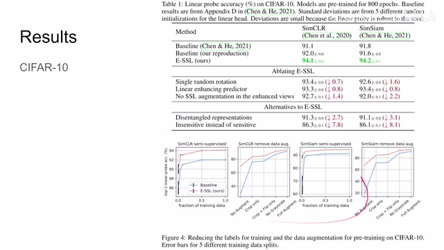
00:09:08–00:09:09 · 画面 02000:09:09–00:09:14 · 画面 021
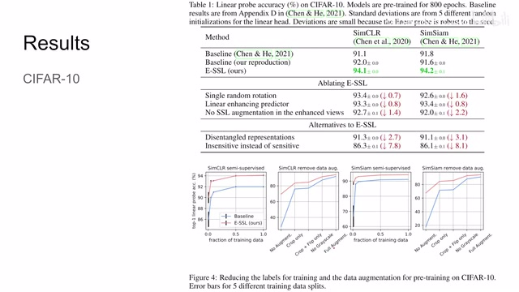
00:09:09–00:09:14 · 画面 02100:09:14–00:10:00 · 画面 022
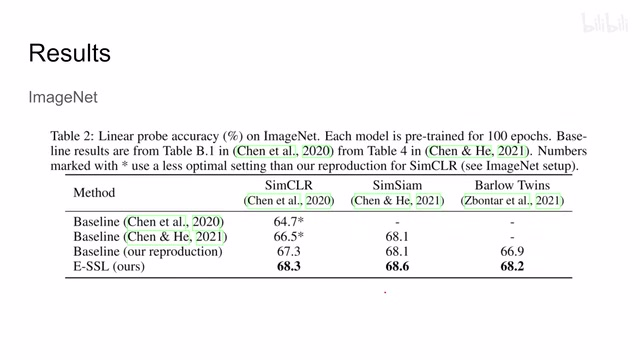
00:09:14–00:10:00 · 画面 022那么后面还有 ImageNet 对吧验证了一下本文的这个方法啊本的这个方法能够在原来的这个 SSL 的这个基础上有一个性能的提升那作者还有幅度啊什么那些东西还是感兴趣的朋友非常推荐你去原文查看那本质上来说呢这篇文章就是想通过最大化利用我们 transformation 这个 data augmentation 它的这个价值来为我们不同的这个下游任务服务那主要的 takeaway 呢就两点，一个是啊，你如果 insensitive 之后不行，那就把它变得 sensitive。那第二个就是最优的这个 combination 是不存在的，你要根据不同的下游任务呢，去调每一个这个 transformation 的这个 sensitivity。向我们揭露了这个世界的残酷真相啊。好了，那么以上就是我对这篇论文的一个快速的一个介绍。那么感谢您的收看，再见。
00:10:00–00:10:01 · 画面 023
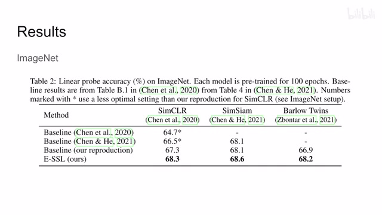
00:10:00–00:10:01 · 画面 023转写与来源说明 · 7 个自动复核提示
保留 140 个原始语音片段，7 个片段触发自动复核提示。提示仅用于定位可能的术语、重复或识别问题，不等于已确认错误。
讲解画面为源视频截图（640×360），不是可编辑 PPT 文件。全片按每秒 2 帧扫描内容变化，逐步展开页保留；连续动画保留代表画面。清晰度受源视频限制。
原视频：paper/合集_2026-10-16_表征学习/[论文简析]Equivariant Contrastive Learning[2111.00899].mp4
SHA-256：bc86f01ece8a86cda4974c9dd181d4ae6a2c36acf0610a440767f1a4fa7db268
一种有 variant 的这个 contrastive learning
self-supervised learning 这些方法
invariant self-supervised learning
经过不同的 transformation
得到的这个 representation 呢
这个 transformation 做了什么
一个 transformation
全文按视频语音与画面制作。原论文可从上方链接下载；完整资料包保留全文、原始逐字稿、字幕和校对记录。